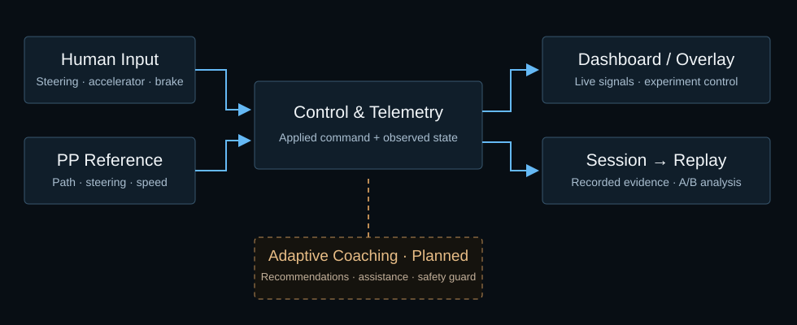

Research Approach
Drive under controlled conditions, record inputs and responses, then compare the results.같은 조건에서 주행하고, 입력과 차량의 반응을 기록한 뒤, 결과를 다시 비교합니다.
1. System Pipeline

2. Experimental Stages
Unassisted baseline초기 무보조 주행
PP reference calibrationPP 기준 주행 보정
Adaptive assistance적응형 주행 보조
Independent practice check훈련 중 독립 주행 확인
Unassisted outcome훈련 후 무보조 평가
PRE records initial manual performance. EXPERT is an added calibration stage for the PP reference. COACHING, PROBE and POST organize assisted training and unassisted evaluation. PRE에서 훈련 전 수동 주행을 기록하고, EXPERT에서 PP의 기준 주행을 확인합니다. 이후 COACHING에서 보조 훈련을, PROBE와 POST에서 훈련 중·후의 보조 없는 주행을 평가하도록 설계했습니다.
The five-stage sequence is this project’s adaptation, not a claim that the source paper used this exact protocol.[1][5]다섯 단계는 차량 실험에 맞춰 확장한 절차로, 논문의 실험 순서와는 다릅니다.[1][5]
3. Separate the Signals
| Signal | Meaning |
|---|---|
| Human | The steering or pedal input requested by the driver.운전자가 입력한 조향값과 페달 조작값. |
| PP Expert | Reference steering and speed from the path-following controller.PP 경로 추종 제어기가 계산한 기준 조향값과 속도. |
| Applied | The final command sent to the vehicle, not measured physical wheel-angle feedback.차량에 전달한 최종 제어 명령입니다. 실제 바퀴의 조향각을 측정한 값과는 다릅니다. |
Recorded differences support reference design. They are not automatically interpreted as learner skill or proof of coaching intervention.[5]사용자와 PP의 차이는 코칭 기준을 마련하는 참고 자료입니다. 차이가 크다는 이유만으로 운전 실력이 부족하다거나 코칭이 개입했다고 판단하지 않습니다.[5]
4. Translating Coaching into Vehicle Control
Observe & Calibrate
Use valid repeated runs to establish segment-level speed, steering and pedal patterns. Treat the PP trajectory as a reference, not the only correct human driving style.품질 검사를 통과한 반복 기록으로 구간별 속도·조향·페달 패턴을 정리합니다. PP 경로는 비교 기준이며, 사람의 유일한 정답 주행으로 가정하지 않습니다.
Define the Action Space
Choose whether longitudinal coaching recommends target speed, acceleration or pedal use. Convert Human and Expert signals to compatible units before blending.종방향 코칭을 목표속도, 가속도, 페달 조작 중 무엇으로 표현할지 정합니다. 사용자 입력과 기준값을 같은 단위의 명령으로 변환한 뒤 혼합해야 합니다.
Separate Help from Protection
Design learner-dependent assistance and an independent safety guard. Log intervention reason, magnitude and the final applied command.학습자에게 맞춘 도움과 위험을 막는 안전 가드를 분리해 설계합니다. 개입 이유·크기와 최종 적용 명령을 함께 기록합니다.
Evaluate without Help
After a pilot validates the protocol, examine unassisted driving rather than only the human–AI team result.예비 실험으로 절차를 점검한 뒤, 사람과 AI의 공동 성과뿐 아니라 보조 없는 주행 능력을 평가합니다.